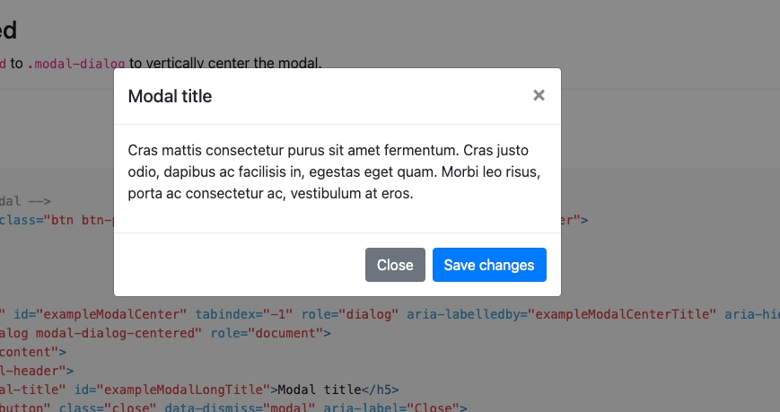

Bootstrap 彈出式視窗
前言
在做網頁的時候常常會需要做到彈跳出來的感覺，這時候如果使用一般得 js 跟 html 會蠻麻煩的，如果使用 bootstrap 框架就可以很輕易的用 modal 完成

modal html 程式碼
這段是彈出式視窗最主要的程式碼
1 | <div class="modal fade" id="exampleModal" tabindex="-1" role="dialog" aria-labelledby="exampleModalLabel" aria-hidden="true"> |
開啟彈跳視窗
要開啟彈跳視窗有兩種方法，一種是透過按鈕開啟，另一個是透過 js 程式呼叫
方法ㄧ 透過按鈕開啟
data-target 的後面是接要開啟的彈出是視窗 ID
1 | <button type="button" class="btn btn-primary" data-toggle="modal" data-target="#要開啟ID"> |
方法二 透過JS開啟
1 | <script> |
進階應用
設定 彈出視窗大小
放大
在 class="modal-dialog" 裡面新增 modal-lg ，變成 class="modal-dialog modal-lg"
縮小
在 class="modal-dialog" 裡面新增 modal-sm ，變成 class="modal-dialog modal-sm"
設定 禁止 ESC 關閉及點擊禁止關閉
把 modal('show') 內加入控制項
1 | <script> |